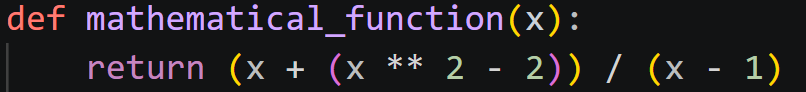

In many editors and IDEs, syntax highlighting is a feature that displays different parts of the code in distinct colors and fonts to improve readability and code comprehension. For example, the image below shows a Python function displayed in Visual Studio Code with syntax highlighting:

In this example, the def keyword is highlighted in one color, the function name in another, literal values (the numbers) in another, and the return statement in yet another. Each pair of parentheses is also highlighted in a distinct color to make it easier to spot opening and closing parentheses from the same pair.
The exact colours used will vary depending on the programming language, the editor or IDE being used, and the theme.